### Srodowiska i narzedzia wytwarzania oprogramowania - wyklad 8 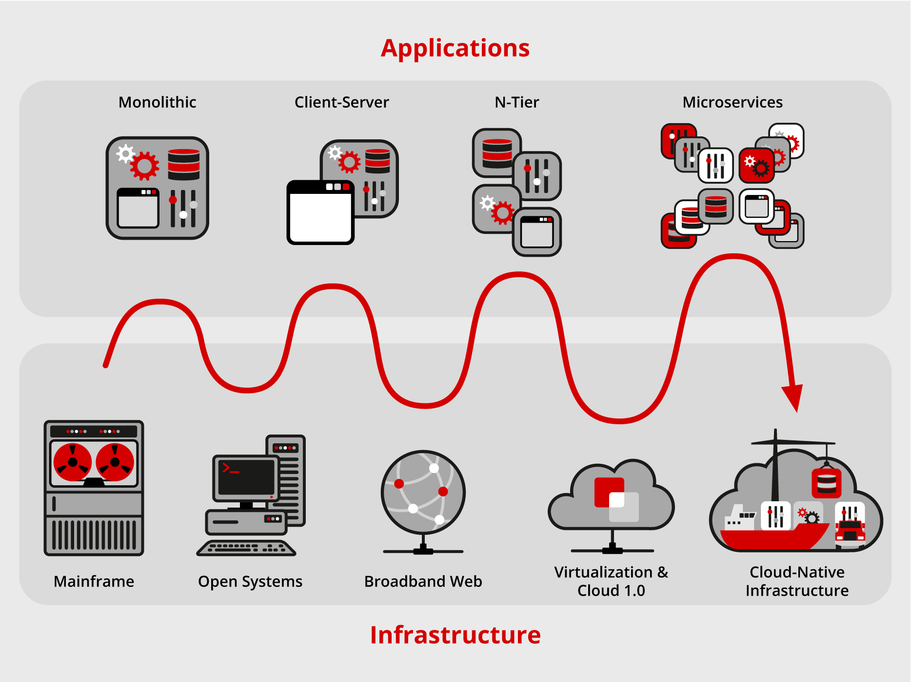 --- #### Mikroserwisy, 'Service Oriented Design/Architecture' 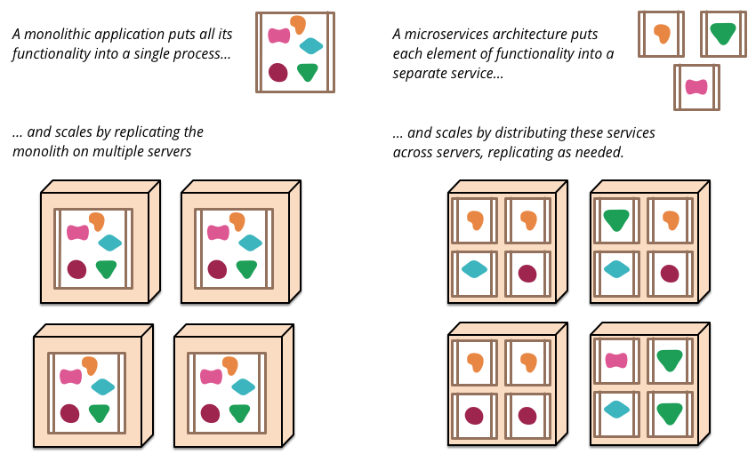 --- #### Mikroserwisy, 'Service Oriented Design/Architecture' - rozbicie duzych serwisow (np. serwer LAMP/LEMP) utrzymywanych na pojedynczych hostach/VM na jak najmniejsze/atomowe skladniki i ich izolacja - latwe zarzadzanie duza iloscia kontenerow rozproszonych pomiedzy wieloma hostami - skalowalnosc i elastycznosc, load balancing - trudniejsze osiagniecie pelnej funkcjonalnosci i niezawodnosci polaczen sieciowych pomiedzy skladnikami **Rozproszony klaster oparty na kontenerach:** - Odszukiwanie uslug w klastrze i skladowanie globalnych ustawien - Zarzadzanie polaczeniami sieciowymi w klastrze --- #### Rozproszony klaster oparty na kontenerach <img src="./docker-swarm-cluster.png" width="650"> --- #### Odszukiwanie uslug w klastrze i skladowanie globalnych ustawien 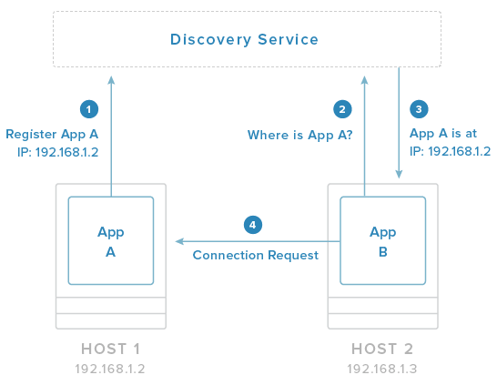 --- #### Odszukiwanie uslug w klastrze i skladowanie globalnych ustawien Zasada dzialania: - bazy danch (klucz-wartosc) rozproszone pomiedzy wezlami klastra - mechanizmy szyfrowania + ACL - HTTP API umozliwiajace dostep i modyfikacje kluczy Kontenery uzyskuja informacje o strukturze klastrza bez zewnetrznej interwencji administratora: - automatycznie lacza sie z pozostalymi komponentami i rejestruja sie w bazie danych tak, ze inne narzedzia wiedza gdzie aktualnie znajduja sie poszczegolne aplikacje - maja dostep do globalnych ustawien klastra i plikow konfiguracyjnych Narzedzia: etcd+crypt, ZooKeeper, confd,... --- #### Odszukiwanie uslug w klastrze i skladowanie globalnych ustawien 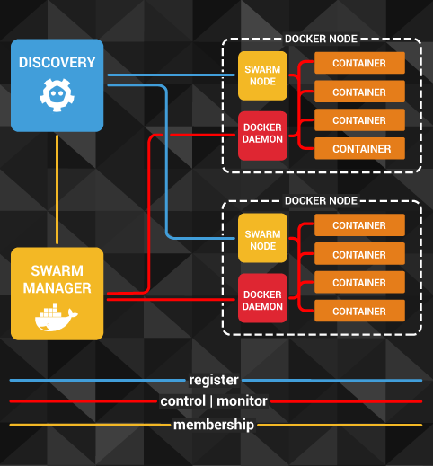 --- #### Zarzadzanie polaczeniami sieciowymi w klastrze - mechanizmy wbudowane - demon Dockera domyslnie uruchamia wirtualny mostek `docker0` 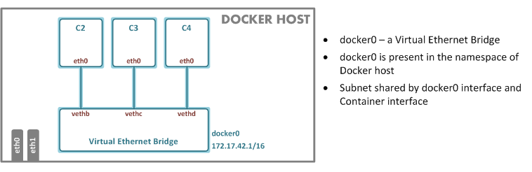 - poprzez mostek `docker0` host tworzy podsiec umozliwiajaca komunikacje pomiedzy kontenerami i hostem - demon Dockera automatycznie konfiguruje tablice `forward` w `iptables` umozliwiajac translacje adresow (NAT) pakietow wychodzacych z kontenerow --- #### Siec typu `bridge` <img src="./docker0-1-1.png" width="400"> --- #### Siec typu `bridge` 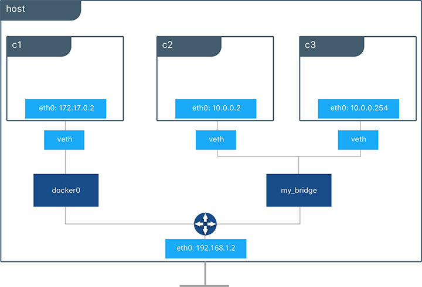 --- #### Translacja adresow 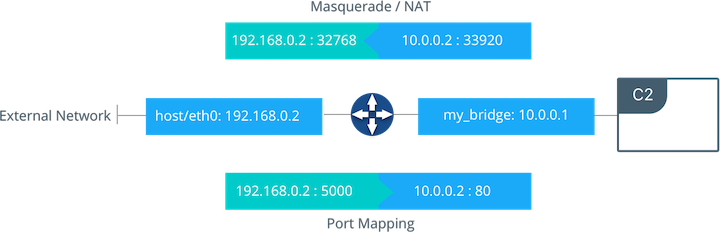 --- #### Zarzadzanie polaczeniami sieciowymi w klastrze - mechanizmy wbudowane - udostepnianie (`--expose`) i mapowanie portow (`-p`, `-P`) pomiedzy kontenerem i hostem - dowiazanie domenowe (`--link`) do IP kontenera: - umozliwia komunikacje pomiedzy kontenerami uruchomionymi na tym samym hoscie bez koniecznosci mapowania portow - konfiguruje polaczenie pomiedzy kontenerami poprzez odpowiednia modyfikacje zmiennych srodowiskowych i ich zapis w `/etc/hosts` - powyzsze mechanizmy sa wystarczajace dla najprostszej infrastruktury --- #### Zarzadzanie polaczeniami sieciowymi w klastrze - zaawansowane metody - wydzielanie podsieci dedykowanych poszczegolnym hostom i aplikacjom - siec nakladkowa pomiedzy wezlami klastra - wirtualna siec nalozona na istniejaca juz infrastrukture sieciowa - tworzy bardziej przewidywalne i jednorodne srodowisko sieciowe pomiedzy wezlami (fabric computing) - tunele VPN, interfejsy macvlan --- #### Siec nakladkowa 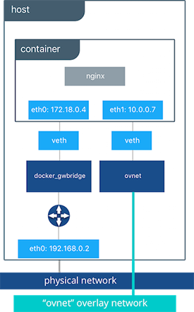 --- #### macvlan <img src="./docker-macvlan.png" width="350"> 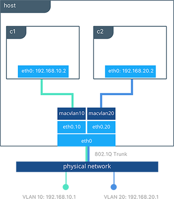 --- #### Zarzadzanie polaczeniami sieciowymi w klastrze - zaawansowane metody - wydzielanie podsieci dedykowanych poszczegolnym hostom i aplikacjom - siec nakladkowa pomiedzy wezlami klastra - wirtualna siec nalozona na istniejaca juz infrastrukture sieciowa - tworzy bardziej przewidywalne i jednorodne srodowisko sieciowe pomiedzy wezlami (fabric computing) - tunele VPN, interfejsy macvlan Narzedzia: - flannel: siec nakladkowa realizujaca z odrebna podsiecia dla kazdego wezla - weave: siec nakladkowa zawierajaca wszystkie wezly; takie rozwiazanie ulatwia trasowanie pakietow poniewaz kazdy kontener jest podlaczony przez wirtualny switch do jednej wspolnej sieci --- #### Zarzadzanie polaczeniami sieciowymi w klastrze - zaawansowane metody - pipework: zawansowane narzedzie umozliwiajace dowolna konfiguracje polaczen sieciowych - tinc: lekkie srodowisko umozliwiajace tworzenie tuneli VPN pomiedzy kontenerami --- #### Flannel <img src="./flannel-0.png" width="750"> --- #### Flannel 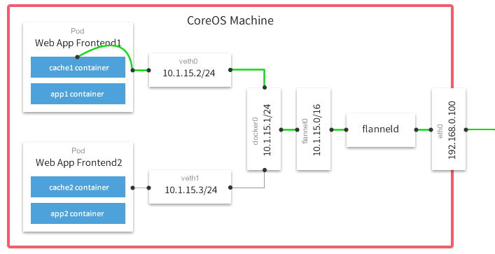 --- #### Flannel 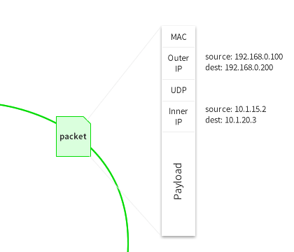 --- #### Flannel 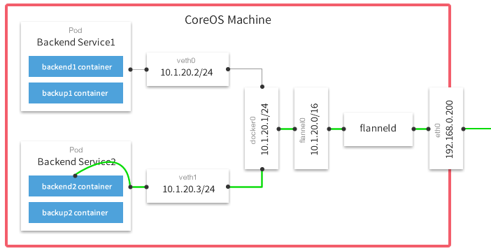 - kazdy host ma przypisana dedykowana podsiec prywatna `flannel0`; dane o tej sieci sa gromadzone przez `etcd` - pakiety pochodzace z kontenera sa kapsulkowane za pomoca urzadzen TUN/TAP wewnatrz pakietow UDP wychodzacych z hosta --- #### Weave <img src="./weave-2.png" width="750"> - pojedyncza wirtualna siec zawierajaca wszystkie kontenery - na kazdym hoscie uruchamiany jest dodatkowy kontener z routerem/switchem `weave`, ktory trasuje pakiety pomiedzy kontenerami - router `weave` kapsulkuje pakiety i wysyla do nastepnego routera `weave` --- ### Kolejkowanie zadan, zarzadzanie klastrem, aranzacja infrastruktury System kolejkowania ('scheduler') jest odpowiedzialny za ladowanie kontenerow do dostepnych wezlow, ich uruchamianie i zatrzymywanie oraz za zarzadzanie calym cyklem zycia wyizolowanych aplikacji/procesow 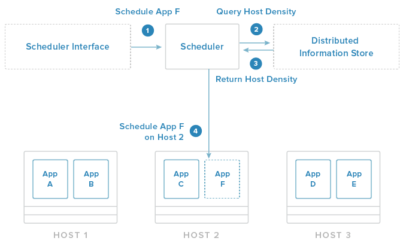 --- ### Jak dziala system kolejkowania - domyslne reguly - okreslaja zachowanie systemu gdy nie ma zadnych danych wejsciowych od administratora np. system umieszcza aplikacje (odizolowana w odpowiednim kontenerze) w najmniej aktualnie obciazonym wezle - mechanizm kontroli systemu - umozliwa administratorowi nadpisanie domyslnych regul np. uruchamianie dwoch powiazanych kontenerow zawsze razem w jednym wezle albo automatyczne dublowanie konkretnego kontenera aby zapewnic wysoka dostepnosc aplikacji - dodatkowe wiezy np. umieszczanie pewnych kontenerow na wybranej grupie wezlow dysponujacych zasobami dyskowymi --- ### Jak dziala system kolejkowania - zapytanie o zasoby jest realizowane przez API badz przez system zarzadzania infrastruktura - system kolejkowania automatycznie: - pobiera informacje o gestosci kontenerow w klastrze z rozproszonych baz danych typu klucz-wartosc - oszacowuje zapotrzebowanie na zasoby oraz stan dostepnych hostow - uruchamia kontenery na wezlach spelniajacych konkretne wymagania badz odpowiadajace zestawowi meta-danych - uruchamia kontenery na aktualnie najmniej obciazonym wezle - dba o to aby kontenery byly uruchamiane na wszystkich dostepnych wezlach; pewna pula wezlow moze byc klasyfikowana jako backup dla pracujacych wezlow na wypadek gdyby jeden albo kilka wezlow uleglo awarii --- ### Kolejkowanie zadan, zarzadzanie klastrem, aranzacja infrastruktury Narzedzia: Docker Compose, Docker Swarm, fleet, Marathon, Kubernetes,... Czesto system kolejkowania pelni tez role zarzadcy calej infrastruktury klastra, lacznie z gromadzeniem danych o wezlach i konfiguracja poszczegolnych wezlow. Aranzacja infrastruktury = kolejkowanie kontenerow + zarzadzanie wezlami --- ### Zarzadzanie infrastruktura klastra - zaopatrzenie (provisioning) - dostarczenie i konfiguracja nowych wezlow klastra w tym demona Dockera - wezly - fizyczne zasoby - wymagaja od administratora pelnej 'recznej' konfiguracji - wirtualne maszyny - latwe w konfiguracji np. przy pomocy `Vagranta` - zasoby w chmurze - konfiguracja poprzez API - narzedzia - Ansible - Chef - Puppet